ACESSE OS PRINCIPAIS LINKS DA INSTITUIÇÃO

☰
X
DAF
DA
GAD
GHR
GEMAP
GETRAN
DEFIN
GECON
GEOFI
GEABS
GEAPC
NTI
DIPLAN
DEPLA
GEPP
GEAC
GECACT
DITER
DATER
GEPAN
GPV
GEAPE
GECRER
GEAG
DOPER
GESAT
GECAM
GECOM
GEORP
CPCPR
DATEF
GEPM
GEPNM
GEAPO
NUCGEO
REGAM
DITER
PJ
GABIN
CCI